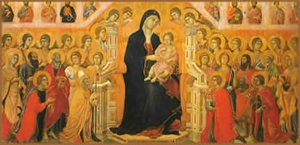
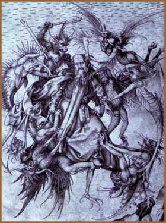

Apocalipse, Velho
Testamento, a Infância de Jesus Cristo,
Virgem Maria, a Paixão e o Último
Julgamento estão entre os temas da pintura do
período que veio a ser designado por gótico.
A arte mural daqueles tempos, consideravelmente desvalorizada
em função da tendência de integração
entre a arquitetura das catedrais e a escultura, veio a
se desenvolver mais ao Sul da Europa, principalmente na
Itália, o primeiro país a privilegiar os exercícios
de perspectiva.
Enquanto na França
e em regiões próximas à Península
Ibérica a arte pictórica é influenciada
pelas miniaturas francesa e inglesa, os artistas italianos
já estavam buscando soluções para o
problema do espaço entre as construções
e a arte mural.
A pintura da era das catedrais
góticas é subdividida em períodos:
o primeiro era caracterizado como linear; seguido pelo estilo
bizantino da escola de Siena; pelo de influências
italianas; depois o internacional; e, por último,
de predomínio do borgonhês e do flamengo.
Ao fim do século XII
e durante o XIV surgiram nas cidades italianas de Siena
e Florença as escolas de pintura mais famosas. A
primeira, que teve como fundador Duccio di Buoninsegna,
era mais conservadora e fiel às formas bizantinas
que, entretanto, foram substituídas por figuras menos
solenes.
As
pinturas da escola de Siena apresentavam grande devoção
pela figura da Virgem Maria, tema recorrente na arte da
cidade, da decoração da catedral iniciada
por Giovanni Pisano, por volta de 1284, à
majestade (Maestà) elaborda por Duccio e seu aluno,
Simone Martini. Ainda no século XIV, os irmãos
Pietro e Ambrogio Lorenzetti foram os
últimos representantes da escola de Siena.
O período posterior,
de influências italianas, foi visível na escola
de Florença, que pouco privilegiava o misticismo
e se mostrava mais preocupada com o realismo das obras.
Giovanni Cimabue e Giotto di Bondone (1266-1336)
foram os representantes desta fase da pintura gótica.
A obra principal de Giotto
di Bondone, Joaquim expulso do Templo, está
na Capela dos Scrovegni, em Pádua. Neste
trabalho o artista procurou dar uma conotação
realista e para tanto evitou os arabescos e a estilização.
Após seu falecimento, a escola florentina mostrou-se
incapaz em dar continuidade aos avanços iniciados
por este artista, que perseguiu incessantemente o realismo.
Assim, ao final do século XIV, houve um retorno ao
estilo de Siena e as escolas européias de pintura
apresentavam estilos quase idênticos.
Em razão desta similaridade,
os historiadores denominam esta fase como gótico
internacional. As pinturas deste período são
caracterizadas pela influência das cores vivas nas
iluminuras góticas.
O
Padrão estético burguês
As cortes européias
preferiam a contemplação de uma realidade
exótica, contrastante e detalhista. Tal ânsia
pela ornamentação foi visível na pintura
flamenga, própria dos Países Baixos, durante
o século XV. Muitas das obras flamengas já
apresentavam linhas que se aproximavam às leis de
perspectiva do Renascimento.
Jan Van Eyck aperfeiçoou
a técnica da pintura a óleo. Como resultado,
os trabalhos ganharam detalhes nunca vistos anteriormente.
A burguesia era a principal impulsionadora da escola flamenga
e por esta razão os pintores voltaram-se para a elaboração
de retratos, como O Casal Arnolfini, de 1434.
Curiosamente, há autores
que chegam a estabelecer comparações entre
certas obras daqueles tempos e o Expressionismo, corrente
do século XX que, ao contrário da arte gótica,
se influenciou pelas manifestações artísticas
de outros continentes, além de ter criticado as tradições,
a burguesia, a autoridade, buscando assim a dessacralização
de mitos.
Everard M. Upjohn,
no segundo volume do livro História Mundial da
Arte, que aborda as manifestações artísticas
dos etruscos ao fim da Idade Média, vê a obra
A Crucificação, de Martin Schongauer,
como uma preciosidade em termos de expressionismo genuinamente
alemão.
De
acordo com o autor, a obra de Schongauer, alheia ao estilo
retratista burguês, fornece uma dimensão pessoal
ao realismo, em virtude de sua busca pela intensidade. A
singularidade do artista também pode ser conferida
na gravura A Tentação de Santo Antônio.
Convém salientar que
o autor percebe tal semelhança em um sentido amplo.
Do mesmo modo, referências heterogêneas como
as máscaras dos rituais africanos, a arte pré-colombiana,
as esculturas góticas, as pinturas de Hieromymus
Bosch, Goya e Van Gogh já
foram agrupadas em um mesmo quadro de referências
por outros pesquisadores.
Die Brücke
(A Ponte), um dos principais grupos expressionistas,
apresentou um sincretismo entre as artes africana e indígena,
somado à recuperação do gótico
medieval. Tal influência também se fez presente
em outro grupo expressionista, o Der Blaue Reiter
(O Cavaleiro Azul). No ano de 1912, o pintor Franz
Marc anunciava, no prospecto inaugural do almanaque
homônimo: "trata do mais recente movimento
pictórico na França, Alemanha e Rússia
e mostra os seus sutis fios de ligação com
o gótico e os primitivos, com a África e o
Grande Oriente (...)".
Para finalizar, há
discussões em torno das obras de diversos pintores
dos estilos gótico e renascentista, referentes à
melhor classificação para as mesmas. Boa parte
das obras do quattrocento integra o gótico
tardio, mas apenas um seleto grupo de autores, a exemplo
de Arnold Hauser e Everard M. Upjohn, menciona esse prolongamento
do gótico inspirado no gosto burguês.
Os artistas do "quattrocento"
costumam ser divididos em dois grupos: inovadores e conservadores.
Os primeiros estavam interessados na perspectiva, na anatomia
humana e animal, enquanto que o segundo grupo preocupava-se
mais com a composição do quadro.
Natural de Florença,
o tradicionalista Sandro Botticelli (1444-1510), autor de
pinturas célebres como O Nascimento da Vênus
e A Primavera, participou do círculo intelectual
da corte de Lourenço de Médice e não
levava tão em conta o interesse dos florentinos pelo
volume, a menos que pudesse exprimi-lo pelo traço.
Texto original
de Carla Damasceno
Extraído
de www.carcasse.com